Identita domu
Upozornění – částečně hypotéza: Fasáda je doložena jen nízkorozlišenou kopií fotografie; výšky a detaily jsou odvozeny z plánu a sousedů.
Chalupa vedle 439 (skica KSPPOP: (417) vedle (439); Planskizze 1892: Haus Nr. 417 v Ziegelgasse; GIS budova 1119 s popiskem 417). Fasáda je doložena jen nízkorozlišenou kopií fotografie (1920 × 1080): k ulici štít s oknem a dveřmi, obložený prkny. Není jisté, zda štít na kopii patří domu 417, nebo stáji z roku 1923.
Použité prameny: nízkorozlišená kopie fotografie cp_417_003 (další kopie cp_417_001, 002 a 004 orientačně), skica KSPPOP cp_439_004, Planskizze 1892, GIS půdorys 1119; plány 1923 (Stall, Abort, Schupfen) se týkají dvorních staveb.
Kde je dům na fotografiích
Dům je na snímku v červeném rámečku, sousední domy jsou popsány čísly a každý otvor má ID, podle kterého se počty otvorů kontrolují proti modelu. Kliknutím otevřete větší obrázek.

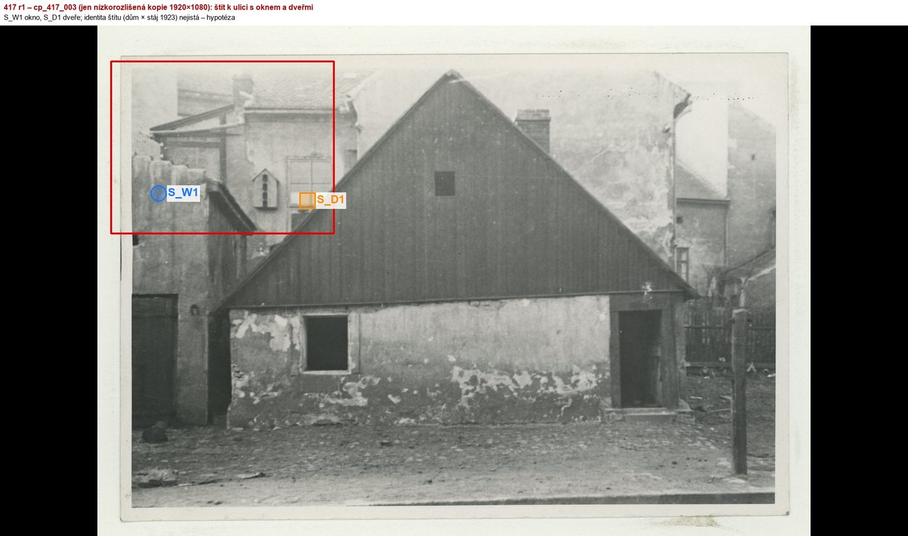
Přílohy v databázi (7)
Všechny přílohy struktury 417 v databázi Libuše, načtené živě 25. 10. 2026 (jen pro čtení) a otevřené. Kliknutím otevřete větší náhled.

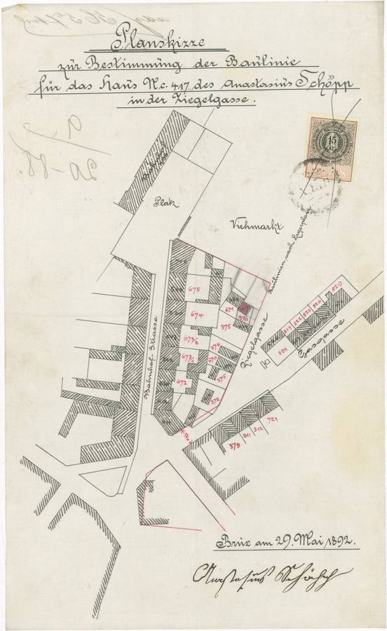
plán / výkres
SHA-256 a53c2dbba371…

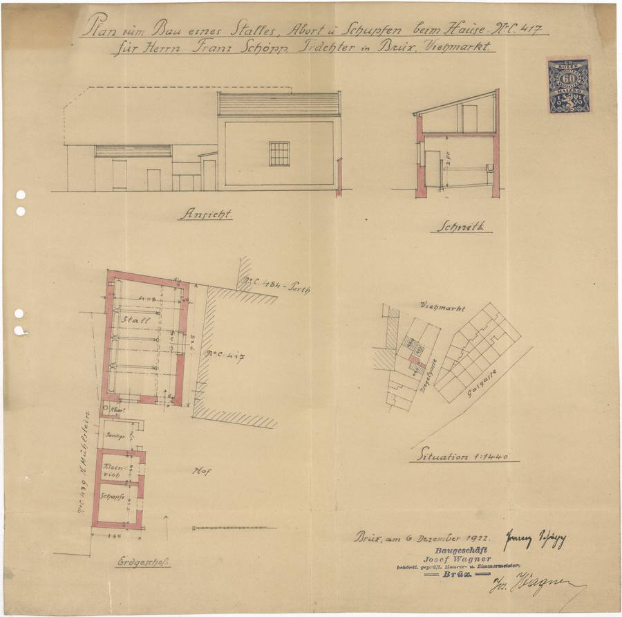
plán / výkres
SHA-256 02d0f3ad719c…

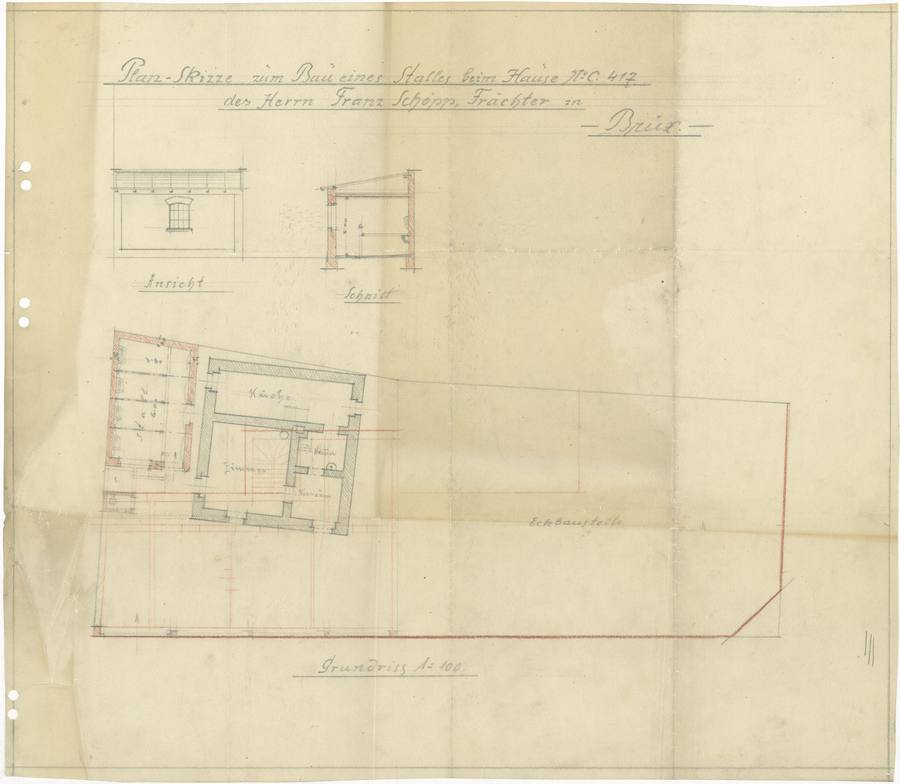
plán / výkres
SHA-256 938f23f8e054…

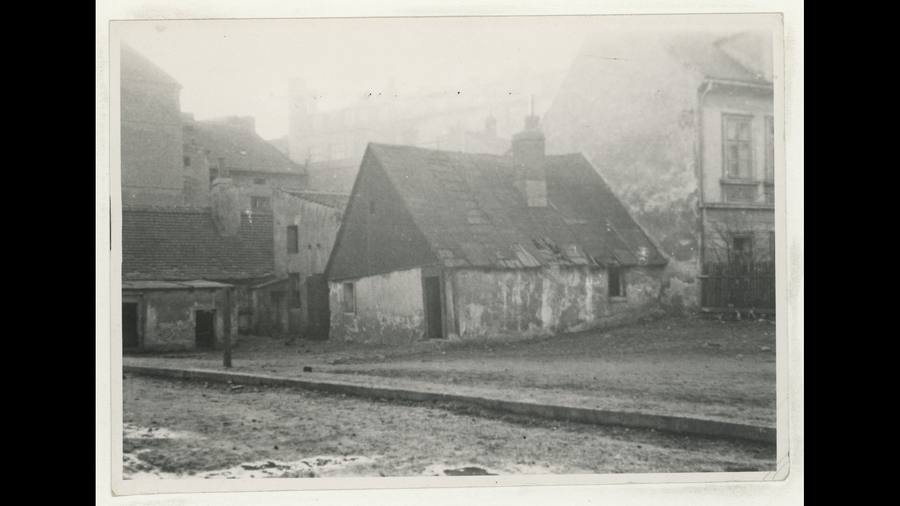
kopie bez tagu (1920 × 1080)
SHA-256 2ae03daa5b7a…

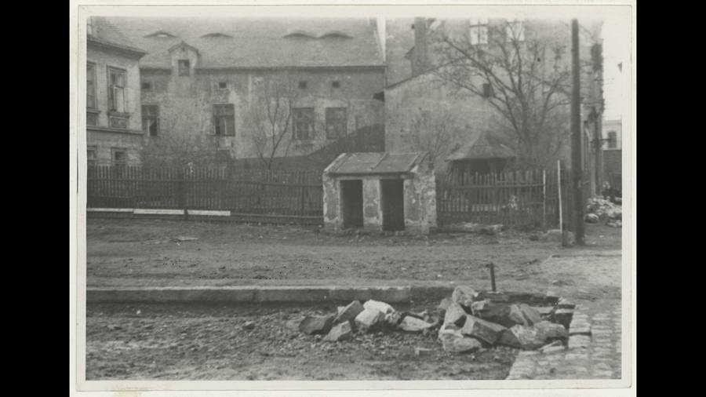
kopie bez tagu (1920 × 1080)
SHA-256 cfdeb8c88631…

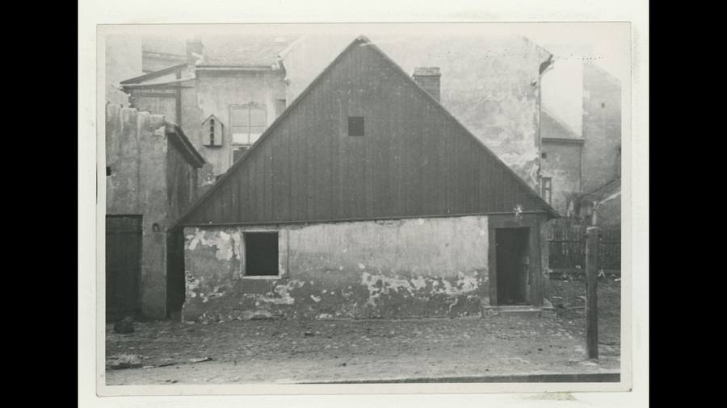
kopie bez tagu (1920 × 1080)
SHA-256 4522b817ebe1…

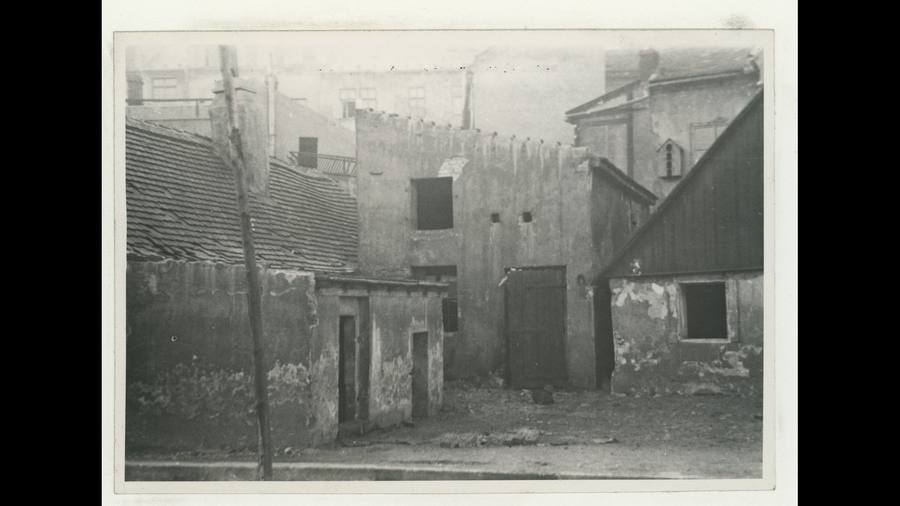
kopie bez tagu (1920 × 1080)
SHA-256 4110faa56a53…
Geometrie
| Revize geometrie | r1 |
|---|---|
| Úsek ulice | S5 · rameno k nám. Dvouletky |
| Poloha | GIS budova 1119, popisek 417, ulice U hřiště (1938 Seligerova) |
| Šířka průčelí | 4,99 m |
| Výška okapu | 2,30 m (odhad) |
| Podlaží | 1 |
| Střecha podle pramenů | sedlová střecha se štítem k ulici (severovýchodní strana 7,5 m) |
| Otvory / vikýře v modelu | 2 / 0 |
| Polygonů | 74 |
Kontrolní pohledy

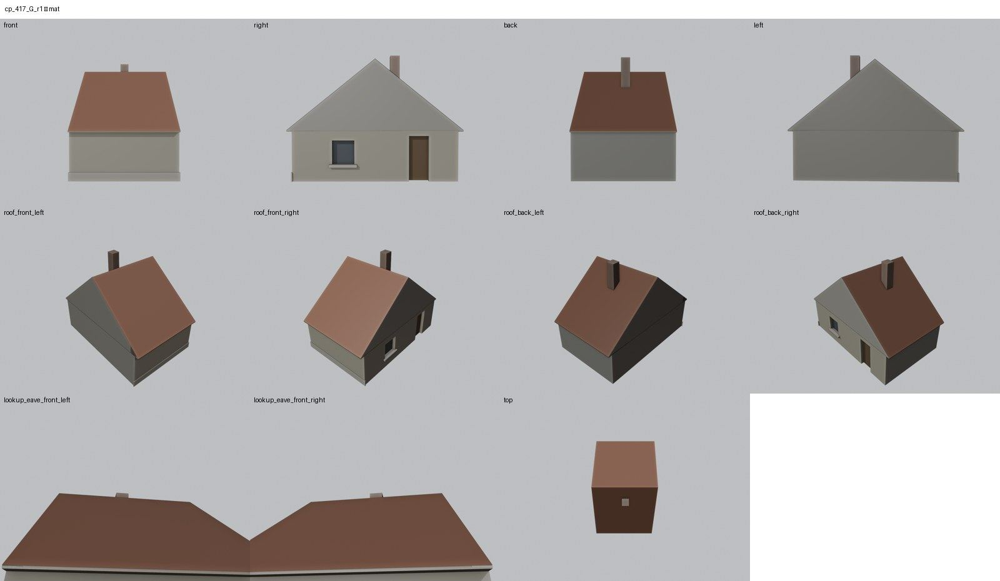

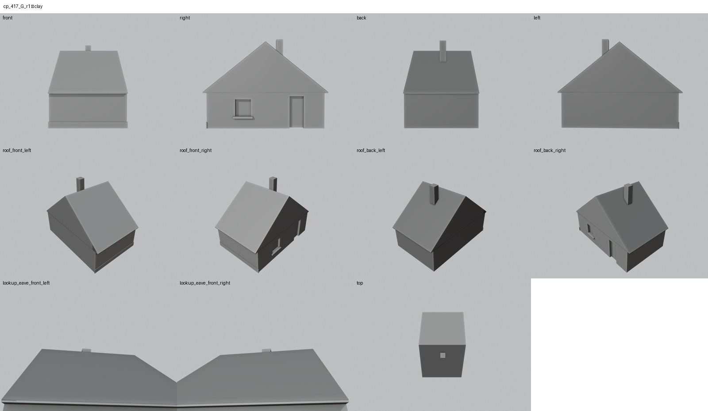

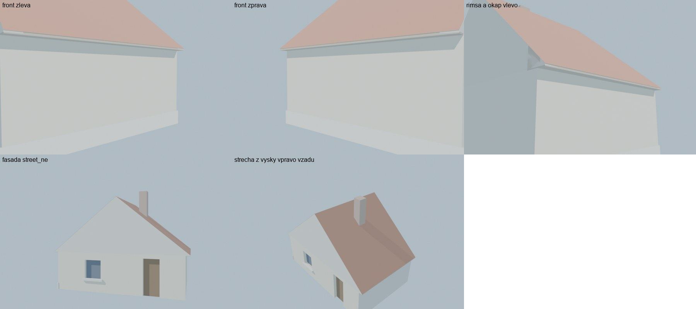
Kontrola modelu
| Brána geometrie (automaticky) | v pořádku |
|---|---|
| Uzavřené podkroví (GLB) | v pořádku: zásahy paprsků 0, nekryté zdivo 0,00 m², střecha nad prázdnem 0,00 m² |
| UV mapování | v pořádku: 0 zkolabovaných ploch z 74 |
| Síť | v pořádku |
| Počty otvorů proti pramenu | souhlasí |
| Vizuální kontrola | prošla (Claude (Opus 5.5), 2026-10-25) |
| Kontrola střechy | prošla |
- hlavní průčelí: lokální front (JV) bez otvorů (souhlasí)
Textury
bez textur (částečně hypotéza – jen prosté materiály)
Až Codex dodá texturovaný model, objeví se v prohlížeči nahoře volba Textury (Codex).
Hypotézy
Upozornění – částečně hypotéza: Fasáda je doložena jen nízkorozlišenou kopií fotografie; výšky a detaily jsou odvozeny z plánu a sousedů.
Vše níže je model_hypothesis, provisional, locked: false.
- existují jen nízkorozlišené kopie fotografií, polohy otvorů a výšky jsou odhad
- není jisté, zda štít na kopii cp_417_003 patří domu 417, nebo stáji z roku 1923
- okénko ve štítu patří do textury
- uliční štít je v modelu boční fasádou (místní průčelí modelu je kratší jihovýchodní strana)
Technický zápis hypotéz v plánu modelu (revize r1, bez diakritiky)
- jen nizkorozlisene kopie fotografii - polohy otvoru a vysky odhad
- neni jiste, zda stit na cp_417_003 patri domu 417 nebo stáji z roku 1923
- okenko ve stitu = textura
- builder: pruceli k ulici je bocni fasada street_ne (stit), lokalni front = JV kratka strana
Historie revizí modelu
- r1 25.10.2026: prvni stavba - chalupa podle nizkorozlisene kopie fotografie a GIS
Soubory
- Geometrie čp. 417, GLB (revize r1)
- Pracovní model: F:\MOST\output\u_hriste_street_claude_2026-10-25\houses\cp417\r1\cp_417_G_r1.blend
- Plán modelu: F:\MOST\output\u_hriste_street_claude_2026-10-25\houses\cp417\geometry_plan.json